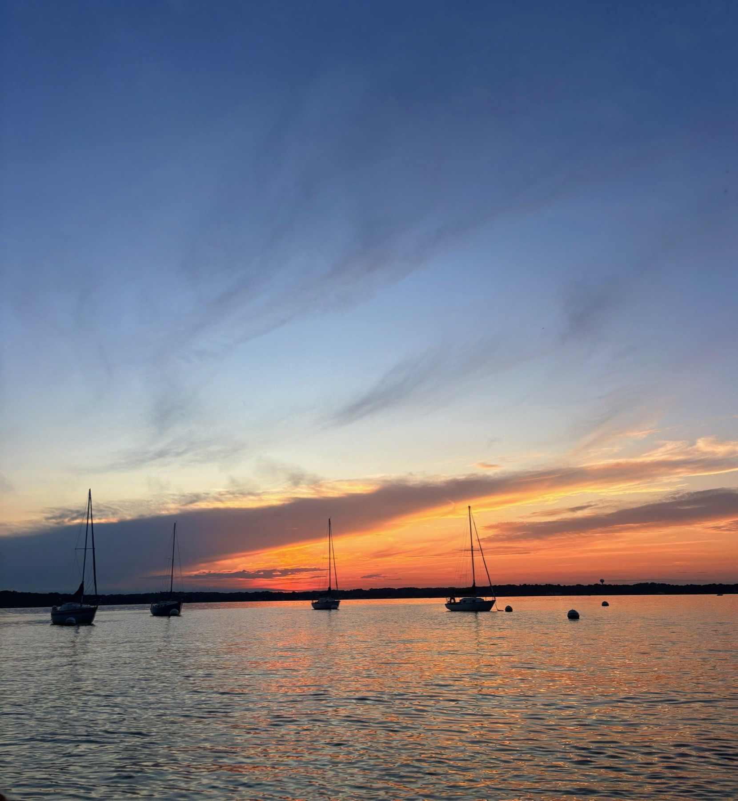
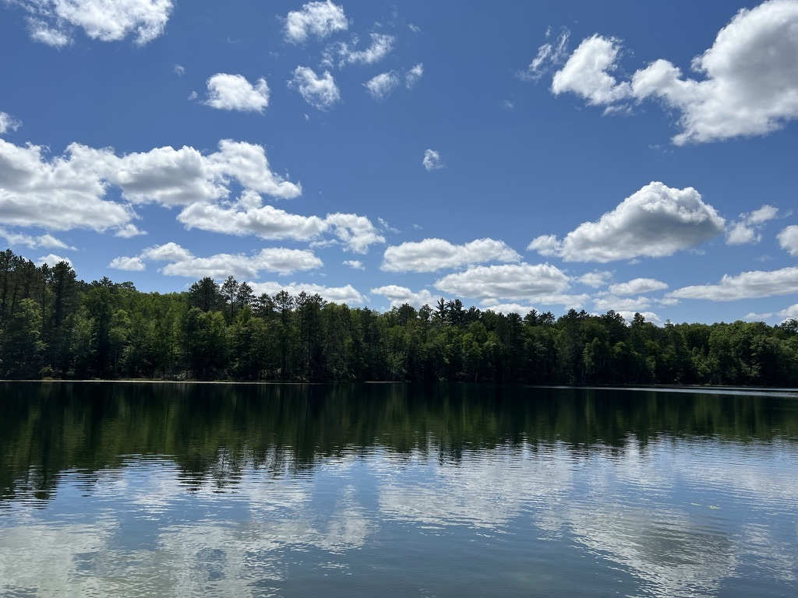
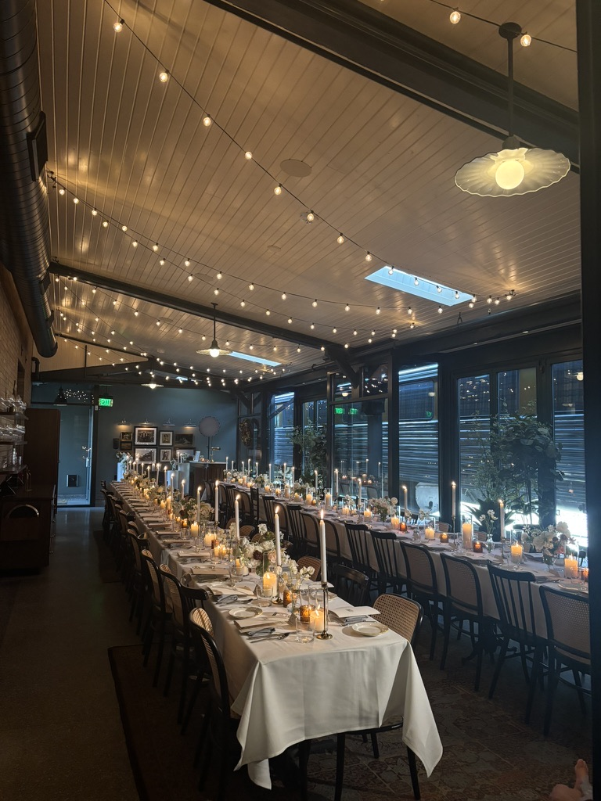

My home. My stars.



Forever my number one breakfast place. They have the best pancakes, burritos, eggs, sausage, hot chocolate, juice, crepes, waffles… I can go on.
Huge menu, and ya can't really go wrong! There's usually a line, especially on weekends.
Fresh pastries baked daily, and locally owned! Great people.
YUMM amazing sourdough. I mean, how can they not?
Love this place, and portions are huge. Though parking is always a pain.
A Madison staple, with some of the best moules frites I have had.
Best people in the world. (I'm biased; I've worked here for four years.) Upscale Wisconsin supper club. A must.
Tops many NYC pizza places for me… Smokey the Bandit is always my go-to.
Super cute & quaint restaurant. The food and experience are fancier, but the setting is laid back.
Wow, their grilled cheese is just perfect. The sandwiches are all delicious – I credit the bread.
A more casual setting; go here to watch a game, or just for a Tuesday dinner out. Still, the food feels elevated: great oysters & I think they have the best chicken piccata.
Great steakhouse. Classic Madison.
Really great Nepalese food. Loved their chai. Note: my meal lasted three hours. Service is attentive, but ~unhurried~.
I find RED to have the best sushi in Madison. The decor is moody (red & black) & I love their outdoor seating during the summer.
Always smells so good & the rotating flavors are perfect.
The ooey-gooey chocolate chip cookie is extravagant. The name speaks for itself.
Any Ancora cafe is so cute. (I also worked here.)
This place makes me feel warm. I love the wooden details & casual, nature setting.
Some of the best coffee in Madison; I really should go more!
The quintessential Madison spot to hang out at and walk to.
A beautiful walk through nature, neighborhoods, and around lakes.
A walk past restaurants, shops and the UW–Madison campus! You'll either end up at the Capitol or the Union!
An outdoor shopping mall that is elevated, but inviting!
Madison has great public golf courses: Odana, Glenway, Yahara.
Schwoegler is just a classic, and Union South, which is downtown, is also fun.
Madison has the best farmers market I've ever been to (summer only!).
During the winter months, go ice skating at Tenney Park or at the Edgewater!
Fun fact: this is where my parents got married! Beautiful gardens & you can go year-round.